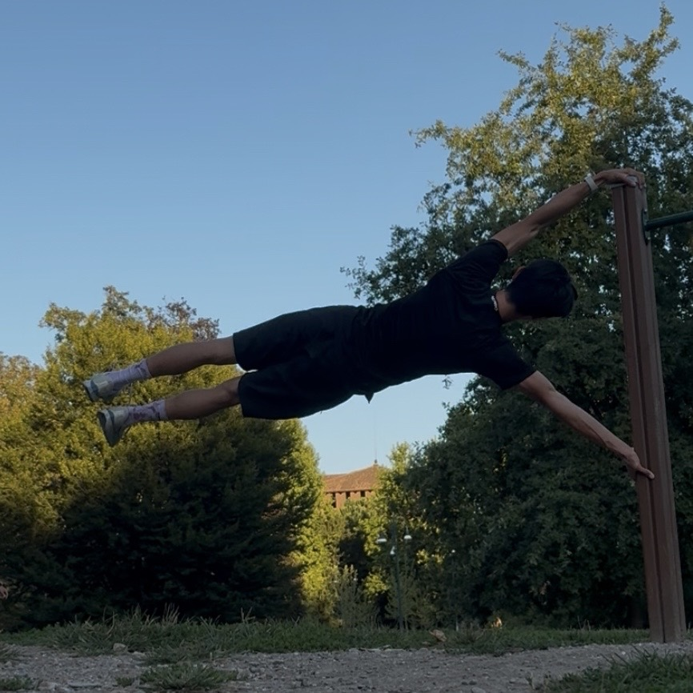

-
I train calisthenics regularly.
As of now, I can perform human flag, front lever, and one arm pull up.

me performing a human flag in Milan, Italy -
I enjoy playing classical piano.
- Suite bergamasque: III. Clair de lune — Claude Debussy
- Liebesträume, S. 541: No. 3 in A-flat major — Franz Liszt
- Étude in E major, Op. 10, No. 3 — Frédéric Chopin
-
I did math competition in college & high school.
- Top 300 individual at Putnam Math Competition.
- Bronze medalist at Chinese Mathematics Olympiad.
-
I was a competitive Rubik's Cube solver when I was 12.
-
My favorite Starbucks drink is Salted Caramel Cream Cold Brew.